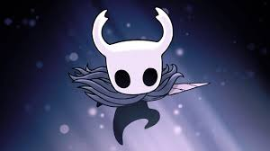

O Cavaleiro é o protagonista silencioso de Hollow Knight, um pequeno ser insetoide/receptáculo com máscara branca e chifres , composto por Vazio, filho do Rei Pálido e da Dama Branca.
Ele retorna a Hallownest sem memórias, usando um prego para enfrentar a infecção, tornando-se o "Senhor das Sombras".

O Knight embarca em uma jornada por diversos lugares de Hallownest, explorando cavernas sombrias, cidades esquecidas e reinos misteriosos. Ao longo do caminho, ele enfrenta e derrota vários chefes poderosos, cada um com suas próprias habilidades e desafios, avançando cada vez mais em sua missão e descobrindo os segredos desse mundo antigo.
| Habilidade | Descrição |
|---|---|
| Prego | O prego é a arma principal do Knight, usada para atacar inimigos e chefes. Ele pode ser melhorado ao longo do jogo para aumentar seu alcance e poder de ataque. |
| Vazio | O Knight possui uma habilidade chamada Vazio, que lhe permite absorver a essência dos inimigos derrotados para ganhar novas habilidades e poderes. Isso é fundamental para progredir no jogo e enfrentar desafios cada vez maiores. |
| Salto Duplo | O Knight pode realizar um salto duplo, permitindo-lhe alcançar áreas mais altas e evitar ataques inimigos. Essa habilidade é essencial para explorar o mundo de Hallownest e enfrentar os desafios que surgem. |
| Esquiva | O Knight pode realizar uma esquiva rápida para evitar ataques inimigos. Essa habilidade é crucial para sobreviver a batalhas difíceis e enfrentar chefes poderosos. |
Hornet se torna companheira do Knight , ajudando em sua jornada , sendo bem marcante na história , além de que ela possui um jogo proprio
Site desenvolvido pelo aluno Gabriel Augusto dos Reis Morais do 2° TINF - IFTM Campus Patrocínio